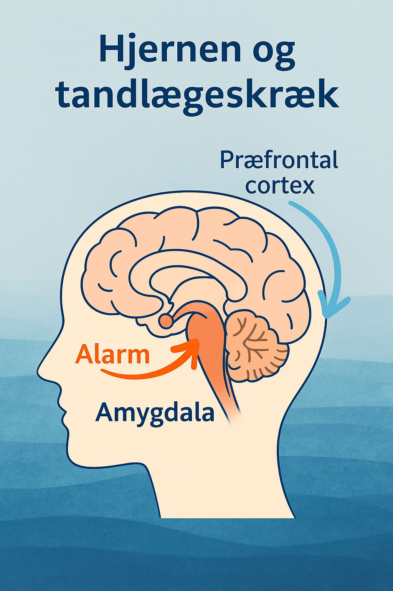
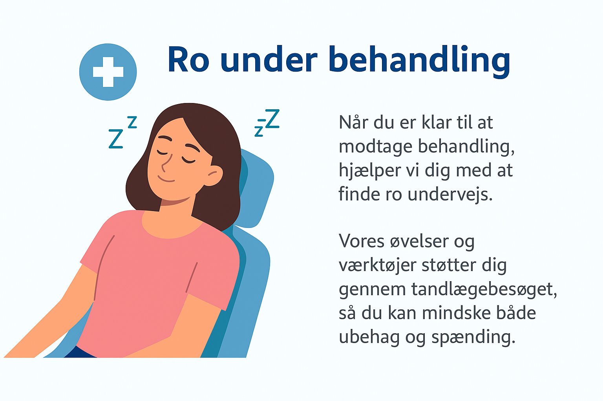

Værd at vide om tandlægeskræk
Tandlægeskræk er ikke et tegn på svaghed – det er en naturlig reaktion fra hjernen, når vi føler os truet eller mister kontrol. Mange oplever ubehag, svedige håndflader, hjertebanken eller behov for at "flygte", når de nærmer sig tandlægestolen. Det skyldes, at kroppens alarmsystem (amygdala) aktiveres – præcis som hvis vi stod over for en reel fare.
Hvorfor CalmClinic virker
CalmClinic er designet til at hjælpe dig med at forstå og berolige din krop – både før og under besøget. Når du ved, hvordan hjernen reagerer, kan du tage kontrollen tilbage:
- 🧠"Forstå din tandlægeskræk" testen Afklarer hvilken type tandlægeskræk du lider af.
- 💬 CalmClinic-testen viser dig, hvordan du bedst kommunikerer med tandlægen.
- 💬 Faglig "oversættelse" af Test resultater og vejledning kan sendes direkte til tandlægen.
- 📋 Forberedelsessiden hjælper dig med at få styr på tanker og praktiske detaljer op til dit tandlægebesøg.
Ved at forstå mekanismerne bag angsten og bruge værktøjerne i CalmClinic, kan du reducere uro og gøre tandlægebesøget til en tryg oplevelse.
Gå videre i appen
👉 Fortsæt med næste trin i din rejse ved at bruge menuen eller læs mere her.